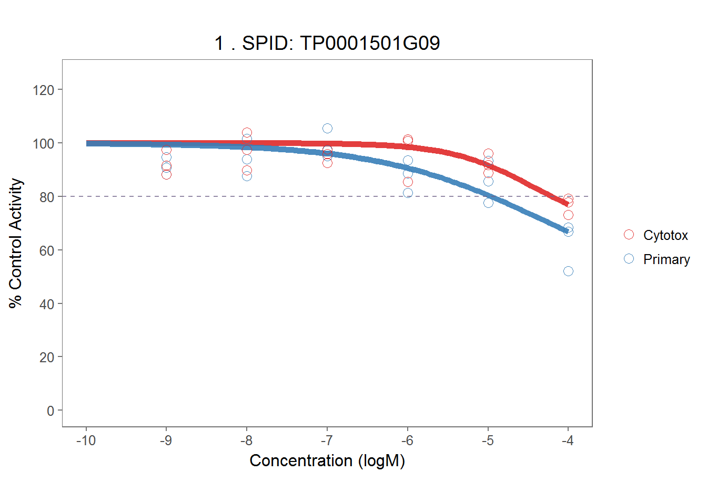
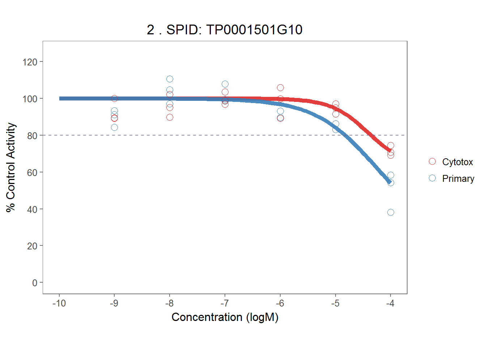

3 Code Test
To ensure all the funcitons written for the analysis works fine, a small data set (included in the ‘toxplot’ package) was used for testing purposes.This testing was done before analyzing the full dataset.
Below are the results by analyzing this small demo dataset.
library(tidyverse)
library(devtools)
load_all("./toxplot")
demo_mc## # A tibble: 540 x 11
## assay pid spid rowi coli conc wllt wllq rep rval
## <chr> <chr> <chr> <int> <int> <dbl> <chr> <int> <chr> <dbl>
## 1 Cytotox Plate_11 DMSO 1 1 NA n 1 rep1 51931
## 2 Cytotox Plate_11 DMSO 2 12 NA n 1 rep1 48694
## 3 Cytotox Plate_11 DMSO 3 12 NA n 1 rep1 47870
## 4 Cytotox Plate_11 DMSO 4 12 NA n 1 rep1 47624
## 5 Cytotox Plate_11 DMSO 5 12 NA n 1 rep1 47383
## 6 Cytotox Plate_11 DMSO 6 12 NA n 1 rep1 46533
## 7 Cytotox Plate_11 DMSO 7 12 NA n 1 rep1 45629
## 8 Cytotox Plate_11 DMSO 8 12 NA n 1 rep1 50190
## 9 Cytotox Plate_11 NaNO3 1 2 1e-04 pr_ec80 1 rep1 48829
## 10 Cytotox Plate_11 NaNO3 8 11 1e-04 pr_ec80 1 rep1 45948
## # ... with 530 more rows, and 1 more variables: apid <chr>assay_info <- list(
prim_assay = "Primary",
toxi_assay = "Cytotox"
)
# normalization
demo_mc_norm <- normalize_per_plate(demo_mc)
# qc
qc_per_plate(demo_mc_norm, assay_info)## $neg_ctrl_sum
## # A tibble: 6 x 7
## # Groups: apid [?]
## apid assay count_DMSO count_DMSO_NA mean_DMSO sd_DMSO
## <chr> <chr> <int> <int> <dbl> <dbl>
## 1 Plate_11_rep1 Cytotox 8 0 101.01525 4.234387
## 2 Plate_11_rep1 Primary 8 0 98.27582 7.857461
## 3 Plate_11_rep2 Cytotox 8 0 101.42554 5.750167
## 4 Plate_11_rep2 Primary 8 0 102.37073 9.500463
## 5 Plate_11_rep3 Cytotox 8 0 99.74308 4.735941
## 6 Plate_11_rep3 Primary 8 0 96.74751 8.379446
## # ... with 1 more variables: CV_DMSO <dbl>
##
## $pos_ctrl_sum
## # A tibble: 6 x 4
## # Groups: apid [3]
## apid assay sd_positive mean_positive
## <chr> <chr> <dbl> <dbl>
## 1 Plate_11_rep1 Primary 0.1785015 3.061242
## 2 Plate_11_rep2 Primary 0.2166091 3.571755
## 3 Plate_11_rep3 Primary 0.3947476 3.016518
## 4 Plate_11_rep1 Cytotox NA 4.102876
## 5 Plate_11_rep2 Cytotox NA 4.007689
## 6 Plate_11_rep3 Cytotox NA 4.476789
##
## $qc
## # A tibble: 6 x 6
## # Groups: apid [3]
## unique_id apid assay CV_DMSO Z_prime SSMD
## <chr> <chr> <chr> <dbl> <dbl> <dbl>
## 1 Plate_11_rep1_Primary Plate_11_rep1 Primary 7.995315 0.7468046 12.11460
## 2 Plate_11_rep2_Primary Plate_11_rep2 Primary 9.280449 0.7049441 10.39668
## 3 Plate_11_rep3_Primary Plate_11_rep3 Primary 8.661149 0.7191689 11.17343
## 4 Plate_11_rep1_Cytotox Plate_11_rep1 Cytotox 4.191830 0.8689211 22.88699
## 5 Plate_11_rep2_Cytotox Plate_11_rep2 Cytotox 5.669348 0.8229226 16.94174
## 6 Plate_11_rep3_Cytotox Plate_11_rep3 Cytotox 4.748140 0.8508620 20.11560# curve fitting
demo_md <- fit_curve_tcpl(filter(demo_mc_norm, wllt == "t"), assay_info)## Processing 9 samples(spid)....
## TP0001501G09 ||TP0001501G10 ||TP0001501G11 ||TP0001502A01 ||TP0001502B01 ||TP0001502B03 ||TP0001502B04 ||TP0001502B05 ||TP0001502B07 ||
## Curve Fitting Completed!
## Calculation time: 2.3 secs# calculate ranking score
demo_rank <- rank_tcpl(demo_md)
knitr::kable(demo_rank, caption = "Ranking Scores for Test Data Set")| index | spid | chnm | casn | taa | med_diff | AC50_toxi | AC50_prim | absEC80_toxi | absEC50_toxi | absEC80_prim | absEC50_prim | cyto_lim | ranking_score |
|---|---|---|---|---|---|---|---|---|---|---|---|---|---|
| 1 | TP0001501G09 | NA | NA | 6.0094767 | 11.056046 | -4.457038 | -4.318049 | -4.208958 | NA | -4.967273 | NA | -4.208958 | NA |
| 2 | TP0001501G10 | NA | NA | 8.7902903 | 16.530767 | -4.413282 | -4.273303 | -4.359345 | NA | -4.826529 | NA | -4.359345 | NA |
| 3 | TP0001501G11 | NA | NA | 12.5729649 | 15.735048 | -4.350704 | -4.462967 | -4.549528 | -4.042310 | -4.901908 | -4.352939 | -4.549528 | NA |
| 4 | TP0001502A01 | NA | NA | 0.1157745 | 2.621527 | -4.384463 | -4.415429 | -4.096896 | NA | -4.174754 | NA | -4.096896 | NA |
| 5 | TP0001502B01 | NA | NA | 4.6352583 | 9.095696 | -4.358898 | -4.302734 | -4.361850 | NA | -4.569708 | NA | -4.361850 | NA |
| 6 | TP0001502B03 | NA | NA | 11.3269038 | 33.796854 | NA | -4.582086 | NA | NA | -4.923170 | NA | NA | NA |
| 7 | TP0001502B04 | NA | NA | 0.5642261 | 12.853646 | NA | -4.264610 | NA | NA | -4.243598 | NA | NA | NA |
| 8 | TP0001502B05 | NA | NA | 7.0109885 | 16.353536 | -4.792074 | -4.502850 | -5.120740 | NA | -5.020539 | -4.158574 | -5.120740 | NA |
| 9 | TP0001502B07 | NA | NA | 10.3912227 | 10.744056 | -4.518140 | -4.578673 | -4.977379 | -4.420396 | -5.167541 | -4.590906 | -4.977379 | NA |
# make plots
demo_plots <- plot_tcpl(demo_md, demo_rank, notation = FALSE)
# Visualize plot
demo_plots[[1]]
demo_plots[[2]]